Three days of theory. Five modules. Four online quizzes. Then the last two days of the HRDC Train-the-Trainer programme, 24 and 25 September 2026, were all about one thing: the mock presentation. Each of the 18 participants had to design a short training session using everything from the week (ROPES, the wow factor, ABCD objectives, the roadmap, the 17-item checklist, engagement every 8 minutes) and deliver it in front of Dr Raymond Lai and the rest of the class. This is where the 60% “skills” weighting lives. No pressure.
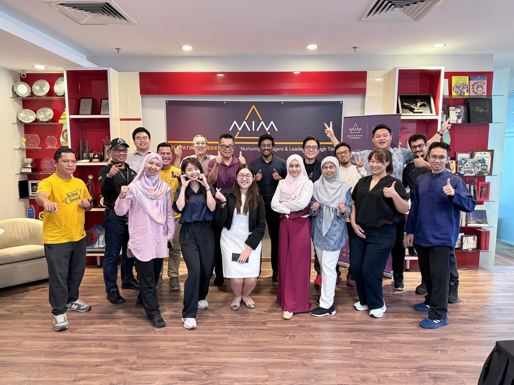
Why This Lecturer Was Sweating
Here’s the thing. My friends and I, Dr Firdaus, Dr Dayana, Dr Wan and Dr Adibah, are university lecturers. We present for a living. You’d think we would be the calmest people in the room.
We were not.
The rest of the class were industry experts, people who train others on safety, hygiene, process improvement, tourism, cybersecurity, mental health and, yes, 4×4 driving. These are people who train adults in the real world, where nobody is forced to attend for a grade and a bored audience simply walks out. A lecture and a training session turn out to be very different animals:
A university lecture
Cover the syllabus. Students are graded, so they stay. Two hours, mostly talking. Success = they pass the final exam.
A TTT training session
Close a competency gap. Engage every 8 minutes. Hook in the first two minutes. Success = they can do something on Monday.
So the evenings went into rebuilding old habits: fewer bullets, more activities, an Arial 60 title, and the magic sentence “Upon completion of this training, you will be able to:” Knowing the content cold was never the problem. The format was.
A Crash Course in 18 Industries
The best surprise of these two days was how much I learned. Every presenter was teaching their own speciality, so in two days I picked up mini-lessons on things I would never otherwise have studied. Here are some of the sessions I managed to photograph.
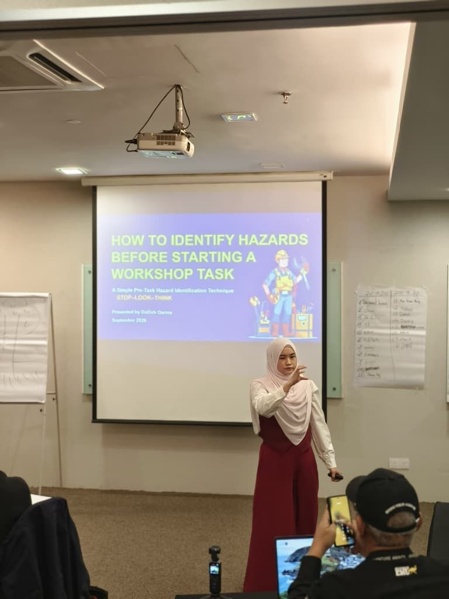
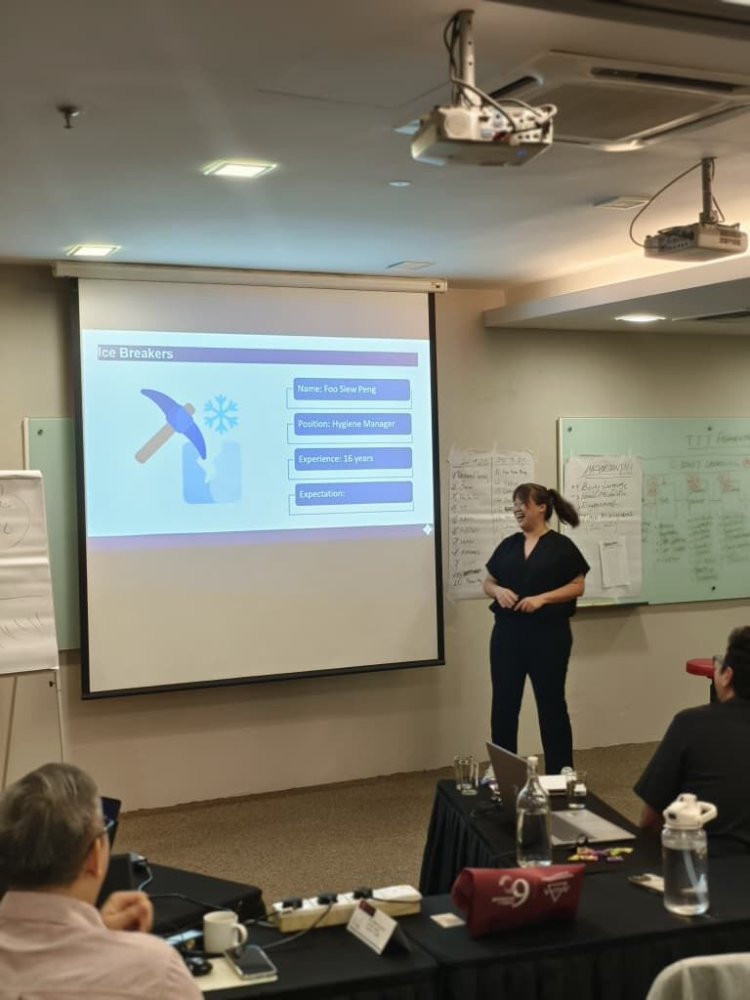
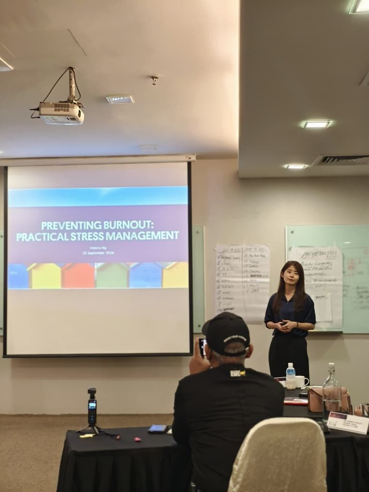
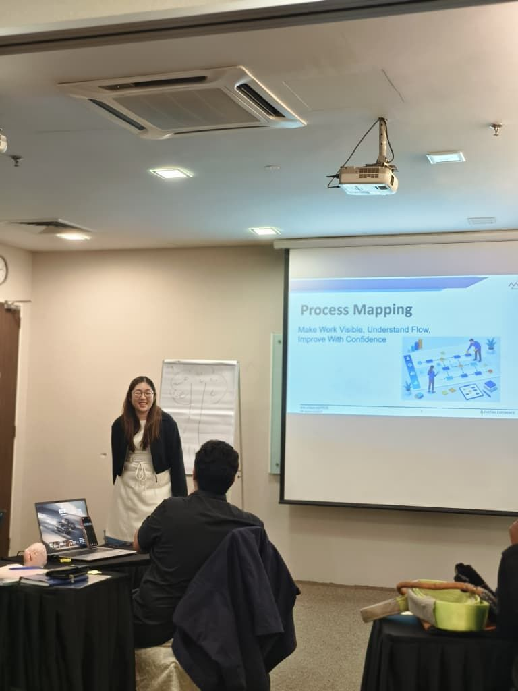
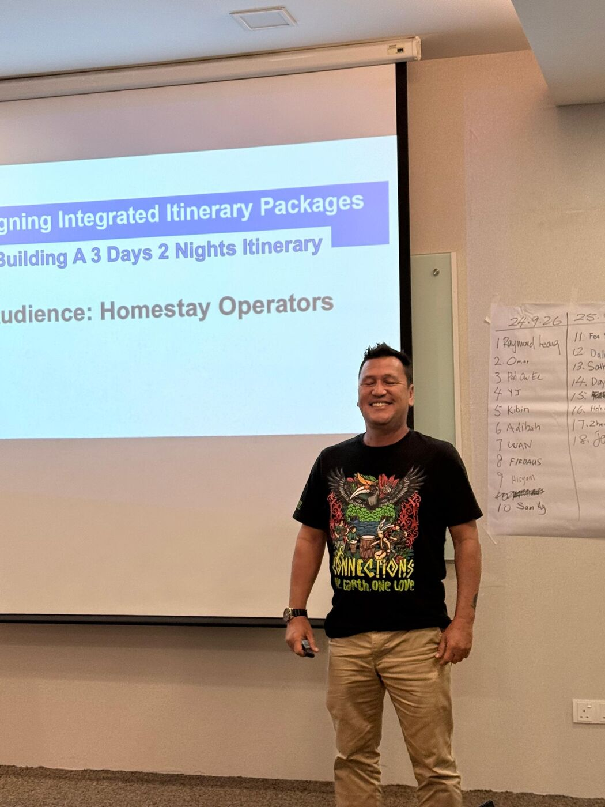
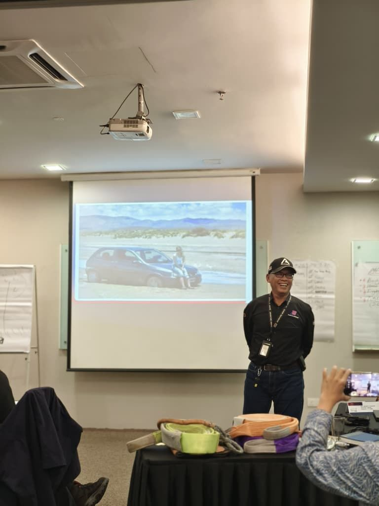
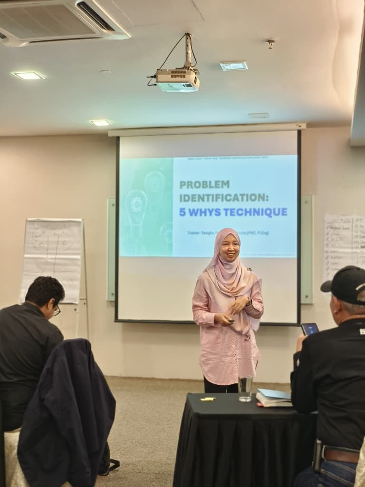
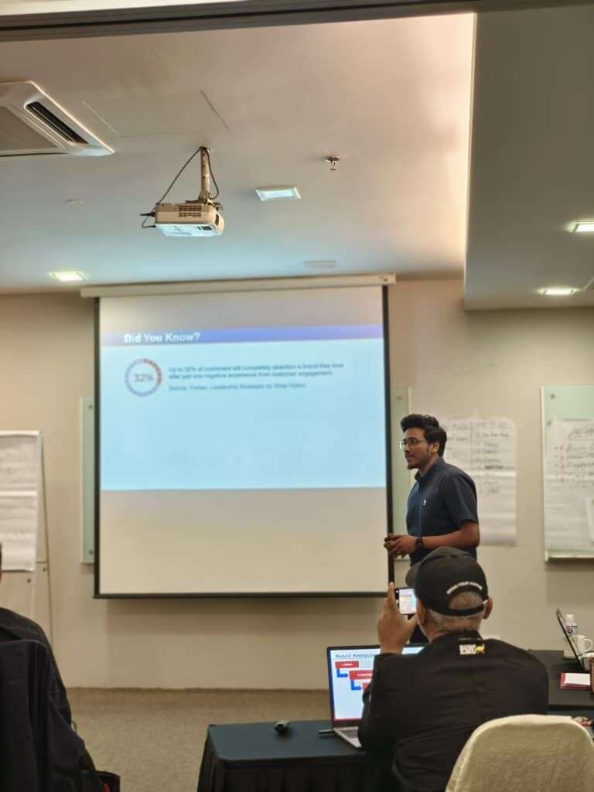
There were also sessions on cybersecurity and more. By the end I had a mental notebook with everything from workshop hazard checks and burnout warning signs to itinerary planning and off-road driving. You could not design a more varied two-day short course if you tried. And because everyone was using the same ROPES skeleton, it was fascinating to watch eighteen people interpret the same structure in eighteen different ways. Some wow factors were statistics, some were stories, some were videos, and a few made the whole room go silent.
My Turn: “Did You Always?”
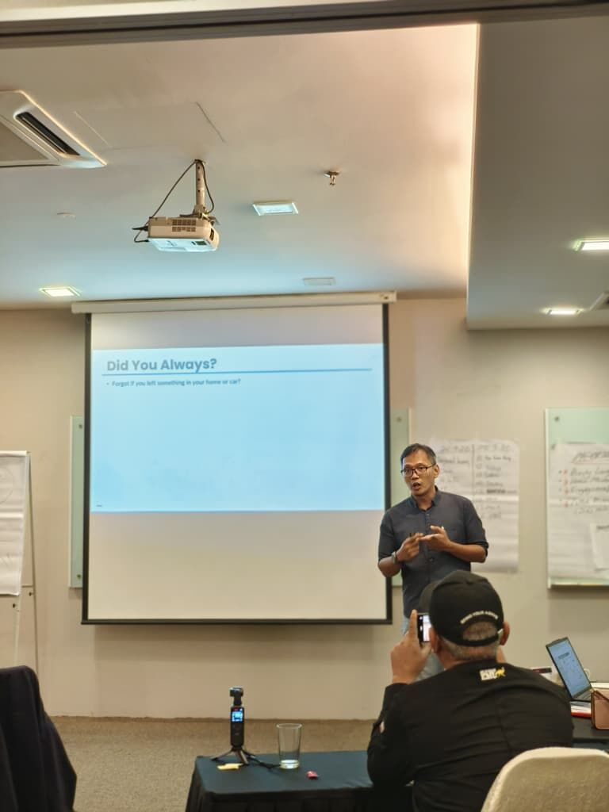
My session was “Create Your First IoT Idea”, a beginner-friendly introduction to the Internet of Things for people who have never touched a sensor. My usual lecture would start with “IoT stands for…” and a block diagram. TTT had beaten that habit out of me by Wednesday.
So I followed the Day 2 recipe. The fact: all of us forget things. Did I switch off the iron? Did I lock the gate? Where did I park? Hands up, everyone, including me. Then, gently, the serious version: news reports of young children left in parked cars, in our heat. Then the provoking question: what if the car itself could notice, and tell you? And finally the motivating question: “Are you ready?”
From there it was ROPES all the way. A “smart or not?” icebreaker where everyone had to physically point at which gadget was IoT. One analogy used throughout: an IoT system is a body, where sensors are the eyes and ears, the controller is the brain, connectivity is the nerves, and actuators are the muscles. Then Tell-Show-Do-Feedback, with pairs designing their own IoT idea on an idea map. I also built in a few running jokes, because “appropriate humour” was on the checklist and I take checklists seriously. One example: the neighbour’s cat, Oyen, who sets off every motion sensor in the neighbourhood and teaches you why your system needs a threshold.
Was I nervous? Very. The room had 17 people who train for a living. But once the pair activity started and the room filled with people sketching their own IoT ideas, I forgot to be nervous and started having fun. Which, according to item 15 on the checklist, was exactly the point.
Alhamdulillah: Best Presenter
At the end of Day 5, Dr Raymond announced the best presenters of the cohort. I honestly didn’t expect to hear my name, considering the calibre of the people around me. Alhamdulillah, I was one of them.
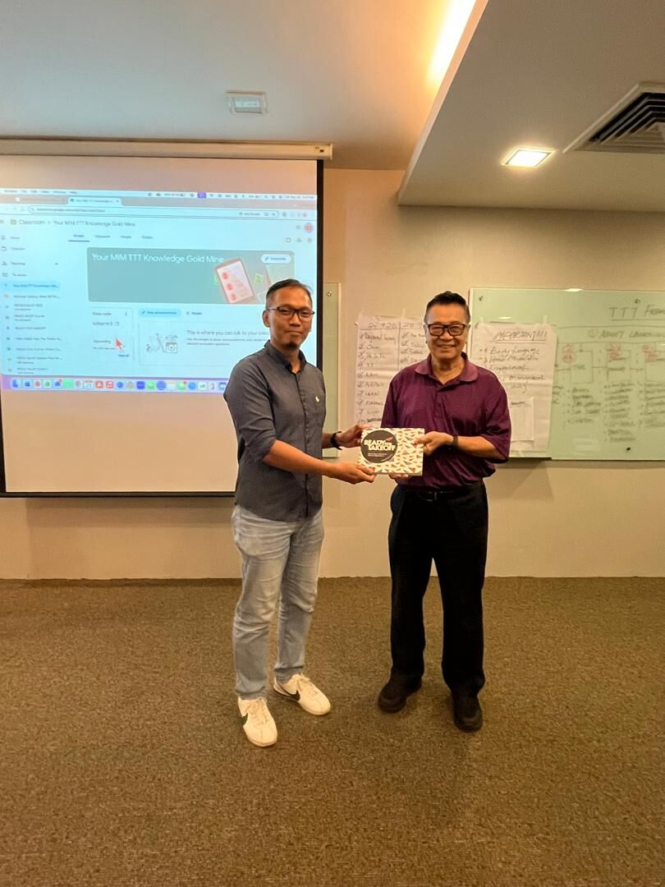
The prize was something money can’t really buy: a copy of Ready for Takeoff, written by Dr Raymond himself together with his daughter. A trainer giving away a book he wrote with his own child is a very personal gift, and it meant a lot. Of everything I took home from the week, that book is my favourite.
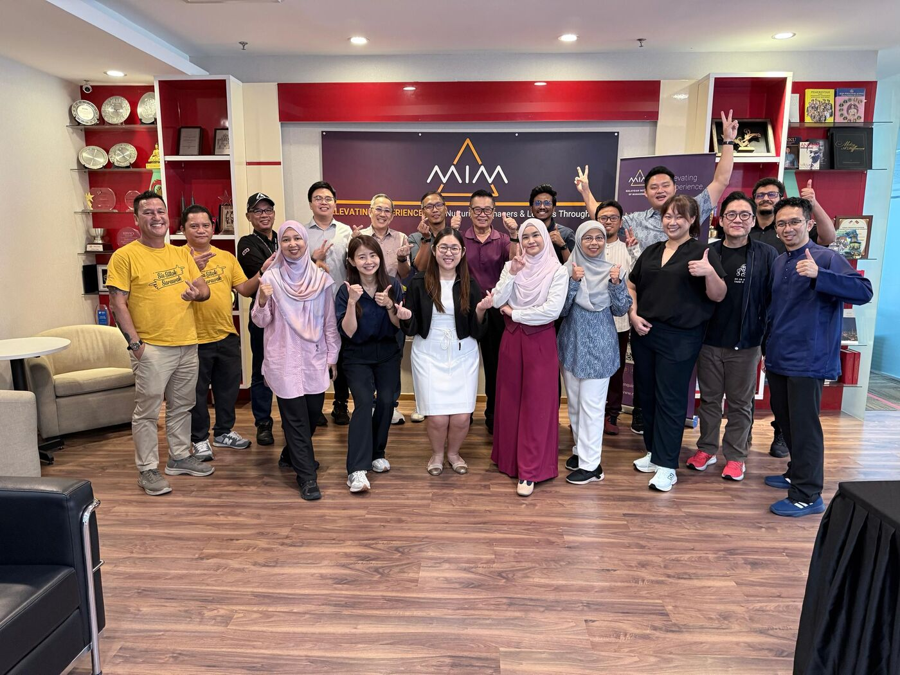
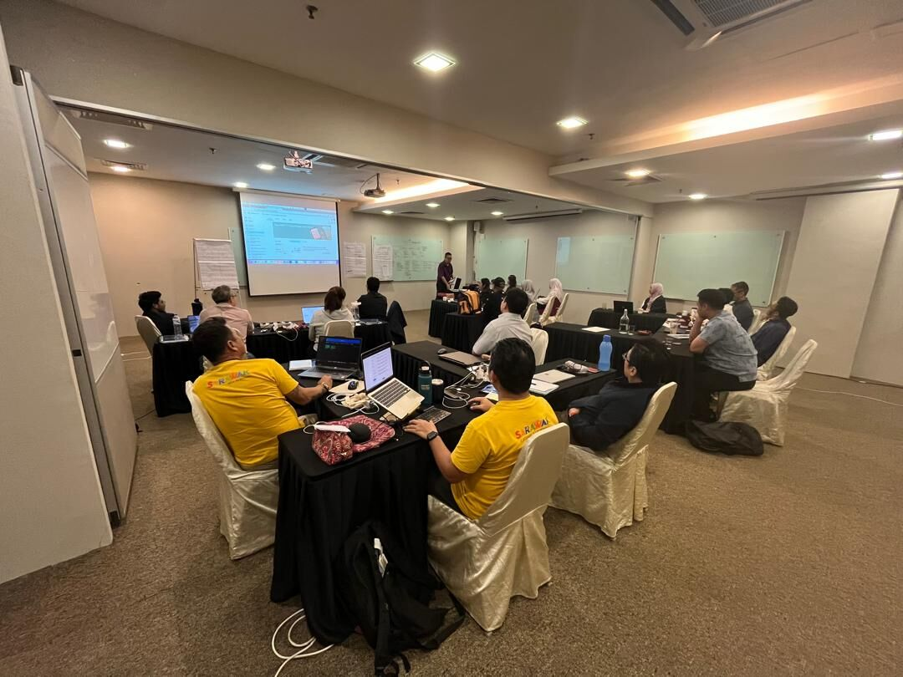
What I’m Taking Back to My Own Classroom
I went into TTT thinking I already knew how to teach. I came out knowing that I knew how to lecture, which is not the same thing. These are the changes I’m making for my students:
- A real wow factor every classFact, provoking question, motivating question. No more “last week we covered…”.
- Engagement every 8 minutesA question, a quick poll, a pair discussion, anything but a monologue.
- ABCD objectives, no “understand”If I can’t observe it, it isn’t an objective.
- Tell, show, do, feedbackNot just in the lab. In the lecture hall too.
- Rehearse, rehearse, rehearseEven for the lecture I’ve given ten times.
A huge thank you to Dr Raymond Lai for a week that was genuinely fun, to MIM for hosting us, to the seventeen fellow participants who taught me more about safety, hygiene, tourism, mental health and 4×4s than I ever expected to learn in a training room, and to Dr Firdaus, Dr Dayana, Dr Wan and Dr Adibah for the moral support during the nervous moments.
Eighteen presenters, five modules, one book. I came to learn how to train, and I left a better teacher.
If you missed the earlier parts: Day 1 (how adults learn), Day 2 (course design), and Day 3 (delivery and evaluation).